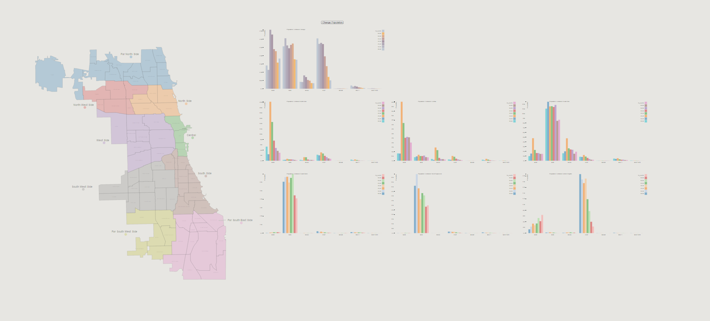
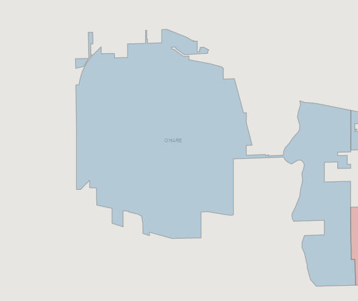
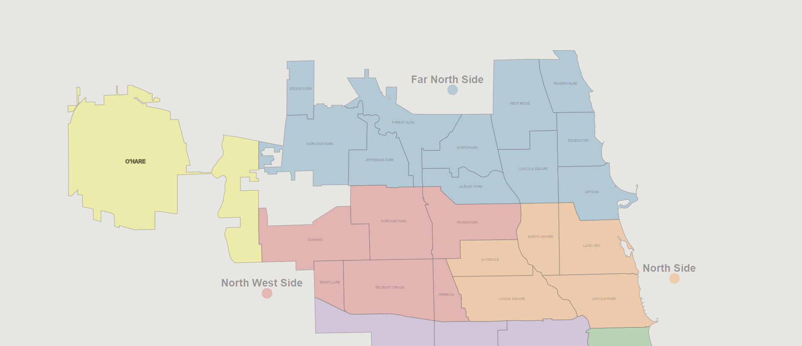
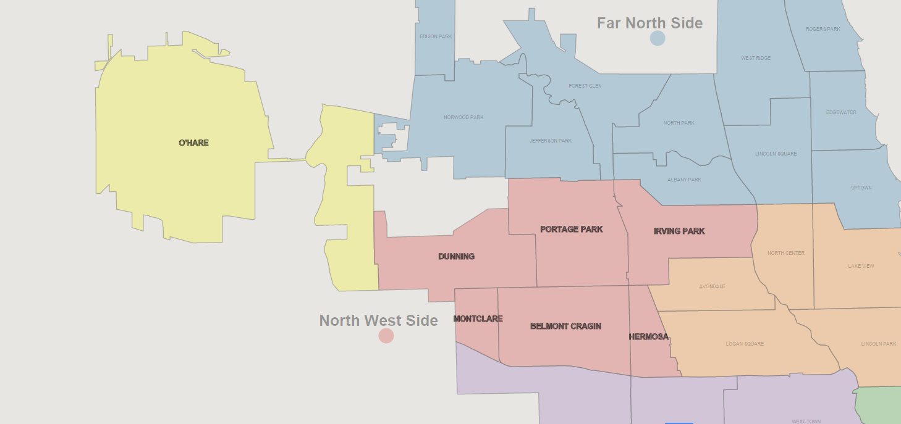
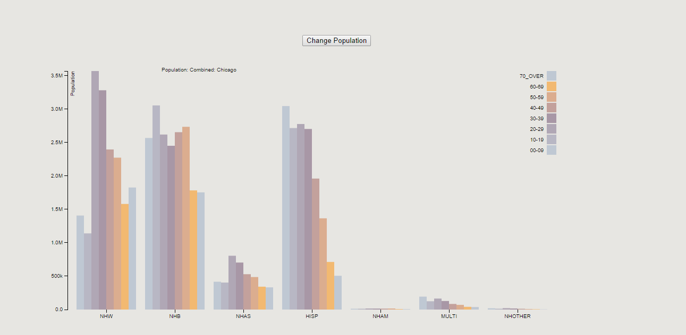

Sweet Home Chicago
Kyle Reese Almryde
Instructions for using the application
Click here!. Selecting Communities
Users can select up to three communities in any order or combination by simply clicking on the location. The name of the community will magnify as the mouse passes over them
after

In addition, when a region is selected, it will turn yellow, making it very clear what areas you are investigating.
Selecting Districts
Users can select a district by double clicking on the district's name or colored circle below the name
Viewing Data
Race, Gender, and Age
By default, a bar graph consisting of the entire city demographics will be displayed. As Districts and communities are selected, charts will appear allowing the user to compare between city,district, and community level data.
Each chart consists of a grouping of the major racial demographics organized by age
Groups are labeled in the following manner:
View by Gender
The user may choose which gender to look at simply by clicking the "Change Gender" Button. By default, all charts start at the combined level data, switching to Men, and then Women respectively
Application Demo
Watch a demo of it on YouTube
Or here
Trends
The most obvious trends one can see are just how segregated the city of chicago is by race. The most obvious example of this would be South Side Chicago district vs Far North Side Chicago district, where the populations of White and African Americans clearly mirror each other. Further more, specific demographics tend to dominate certain communities over others. This can be seem in places like LakeView, which has a high concentration of young, mid 20s to early 30s, white residents.
Data
This project used race, gender, and age data from the 2010 US Census, as found here. In an effort to present it in a more concise manner, age groups were collapsed into ranges of 10 years
Source
The source code for this project can be found on GitHub